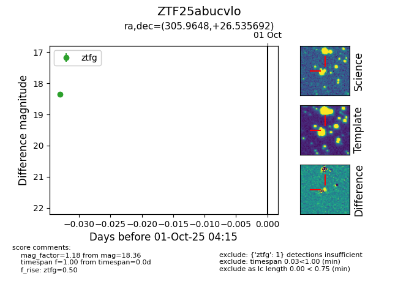

FINK: ZTF25abucvlo
Lasair: ZTF25abucvlo
ALeRCE: ZTF25abucvlo
ZTF25abucvlo (ztf,fink)
equatorial (ra, dec) = (305.9648,+26.53569)
galactic (l, b) = (67.0584,-6.24308)

last ztfg=18.36
1 ztfg detections